Topic 3 Logistic Regression
3.2 Motivation
- Marketers often observe binary outcomes
- Did a customer:
- purchase?
- subscribe?
- renew?
- respond?
- Did a customer:
- Using linear regression is not appropriate…
- …But logistic regression still allows us to:
- Understand IV/DV relationships
- Make predictions
3.3 Why not use linear regression?
Want to see how \(age\) affects \(buy\)
- \(buy=\begin{cases}1\text{ if yes/true}\\0\text{ if no/false}\end{cases}\)
Examine relationship with a scatterplot
- What do we see?
Figure 3.1: Scatterplot with Binary DV
Code
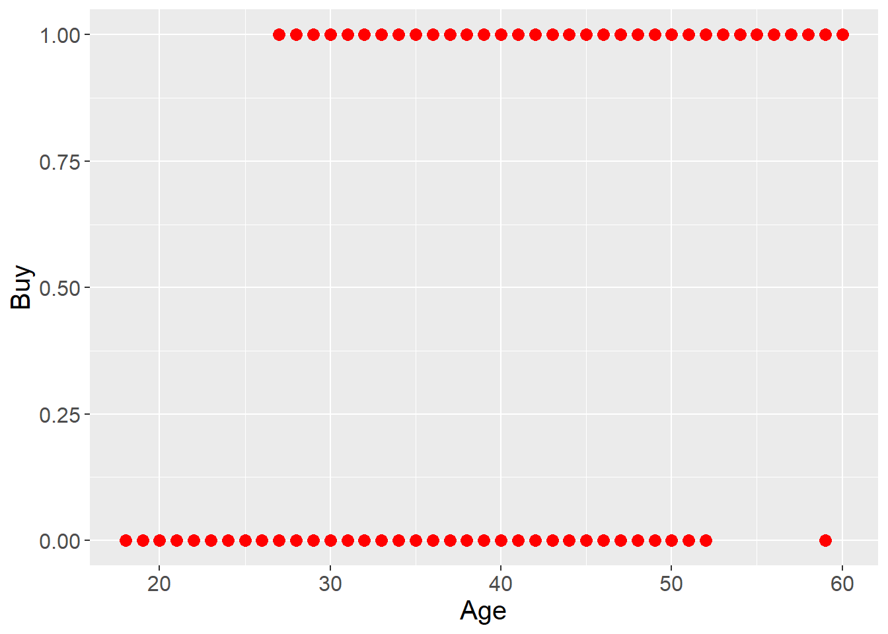
- Try linear regression: \(buy=\alpha+\beta_1 age\)
Table 3.1: Linear Regression Results
Code
| F(1,398) | 251.7421 |
| R² | 0.3874 |
| Adj. R² | 0.3859 |
| Est. | S.E. | t val. | p | |
|---|---|---|---|---|
| (Intercept) | -0.7154 | 0.0702 | -10.1930 | 0.0000 |
| age | 0.0285 | 0.0018 | 15.8664 | 0.0000 |
| Standard errors: OLS |
Good \(R^2\) and \(age\) is highly significant
So what’s the problem?
Predict \(buy\) from linear regression results:
\(\hat{buy}=-.7154+.0285age\)Prediction line shown in plot
Figure 3.2: Predicted Values from Linear Regression
Code
directmktg %>%
select(age) %>%
mutate(yhat=predict(model,.)) %>%
mutate(neg=as.factor(ifelse(yhat<0,"Yes","No"))) %>%
ggplot(aes(x=age, y=yhat, color=neg)) +
geom_point(size=3) +
scale_color_manual(values=c("Yes"="red",
"No"="black"),
guide="none") +
theme(text=element_text(size=15)) +
labs(x="Age", y="Linear Prediction")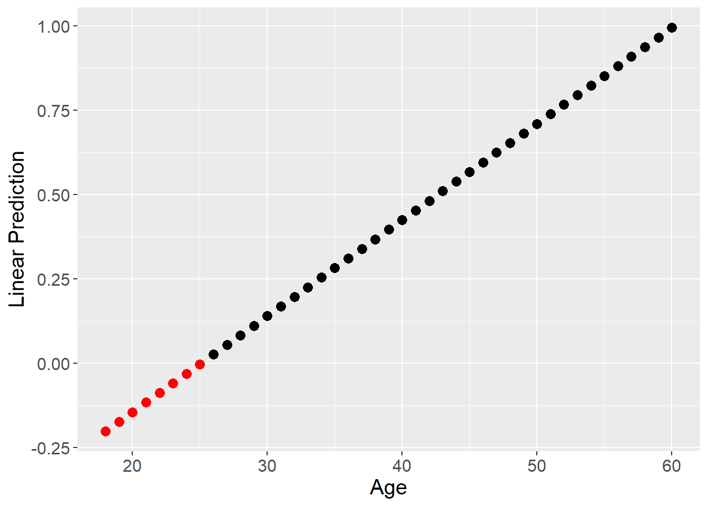
Add \(age\) categories and plot mean \(buy\) for each category * What “shape” does this resemble? * Can we use this “shape” to model the relationship?
Figure 3.3: Buy for Age Groups
Code
# Create data frame grouped by age
dmgrp <- directmktg %>%
# 'cut' breaks a continuous variable into groups of each width
# 'as.numeric' keeps the new variable as integer (vs. factor)
mutate(agegrp = as.numeric(cut(age, 9))) %>%
group_by(agegrp) %>%
summarise(age=mean(age), buy=mean(as.numeric(buy)-1))
# Run logistic model to create prediction to make s-curve
binmod <- glm(buy~age, directmktg, family="binomial")
# Create dataframe with predicted values
dmpred <- directmktg %>%
select(age, buy) %>%
mutate(yhat=predict(binmod, type="response"),
buy=as.numeric(buy)-1)
# Create combined plot; each geom with separate data
ggplot() +
geom_point(data=directmktg,
aes(x=age, y=(as.numeric(buy)-1)),
size=3, color="red") +
geom_line(data=dmgrp,
aes(x=age, y=buy),
size=1.5, color="midnightblue") +
geom_line(data=dmpred,
aes(x=age, y=yhat),
size=1.5, color="darkorange") +
theme(text=element_text(size=15)) +
labs(x="Age", y="Buy")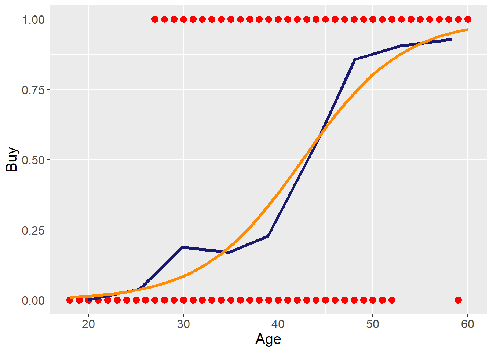
3.4 Understanding Logistic Regression
- Uses the logistic function:
\(f(z)=\frac{e^u}{1+e^u}\)- \(f(z)\) is the probability of event happening
- When \(u=0\), \(f(z)=\frac{e^0}{1+e^0}=\frac{1}{1+1}=0.5\)
- \(u\) is a linear function, such as: \(\alpha+\beta x\)
- \(f(z)\) is the probability of event happening
- Ensures predictions are never above 1 or below 0
Figure 3.4: Logistic Function
Code
# Create simulated data frame based on logistic function
u=seq(-7,7,.05)
fz=exp(u)/(1+exp(u))
ufz=data.frame(u=u, fz=fz)
# Plot function
ufz %>%
ggplot(aes(x=u, y=fz)) +
geom_line(color="darkorange", size=1.5) +
theme(text=element_text(size=15),
panel.grid.major.x = element_blank()) +
scale_x_continuous(breaks=0, minor_breaks=NULL) +
scale_y_continuous(breaks=seq(0,1,1), minor_breaks=NULL) +
labs(x="u", y="f(z)") +
annotate("segment", x=0, y=0, xend=0, yend=0.5,
linewidth = 1, color="red") +
annotate("segment", x=-7, y=0.5, xend=0, yend=0.5,
linewidth = 1, color="red") 
- Probability of event success vs. failure \(=\frac{f(z)}{1-f(z)}=\) Odds Ratio (\(OR\))
- Suppose probability of success \(=.01\), then:
\(OR=\frac{.01}{1-.01}=.0101\)- Suppose probability of success \(=.001\), then:
\(OR=\frac{.001}{1-.001}=.0010\) - Suppose probability of success \(=.99\), then:
\(OR=\frac{.99}{1-.99}=99\) - Suppose probability of success \(=.999\), then:
\(OR=\frac{.999}{1-.999}=999\) - Suppose probability of success \(=.5\), then:
\(OR=\frac{.5}{1-.5}=1\)
- Suppose probability of success \(=.001\), then:
- Suppose probability of success \(=.01\), then:
- Substituting logistic function for \(f(z)\) into Odds Ratio \(\Rightarrow\)
\(OR=e^u=e^{\alpha+betax}\)- \(\frac{f(z)}{1-f(z)}=\frac{\frac{e^u}{1+e^u}}{1-\frac{e^u}{1+e^u}}=\frac{\frac{e^u}{1+e^u}}{\frac{1+e^u}{1+e^u}-\frac{e^u}{1+e^u}}=\frac{\frac{e^u}{1+e^u}}{\frac{1}{1+e^u}}=e^u\)
- Can transform exponential function into linear \(\Rightarrow\)
\(Logit=\ln(OR)=\alpha+\beta x\)
3.5 Conducting Logistic Regression
- Model Estimation
- Assessing Model Fit
- Goodness of Fit Measures
- Classification Matrix
- ROC Curve
- Interpreting Coefficients
- Gains and Lift
3.5.1 Model Estimation
- Best to use training data and holdout data
- Estimate model on training data (~75% of sample)
- Check prediction accuracy on holdout data (~25%)
- Can estimate either (1) \(OR\) or (2) \(Logit\) formulation
- \(OR=e^{\alpha+\beta_1x_1+\cdots+\beta_kx_k}\)
- \(Logit=\alpha+\beta_1x_1+\cdots+\beta_kx_k\)
- Independent variables:
- Can be one or more
- Can be continuous or categorical/factor
3.5.2 Assessing Model Fit
3.5.2.1 Goodness-of-Fit Measures
- Overall significance based on \(-2LL\)
- Lower (closer to \(0\)) \(-2LL\) indicates a better fit
- Compare \(-2LL\) of estimated model with “null” model
- McFadden’s Pseudo-\(R^2\)
- Values range from 0 to 1 like linear regression
- Interpreted in a similar manner
- Amount of variation in DV explained by IVs
3.5.2.2 Classification Matrix
- How does the model do in predicting outcomes?
- Generate predicted probability of success, \(p(\text{SUCCESS})\), for each observation
- If \(p(\text{SUCCESS})\ge0.5\), predict \(\text{SUCCESS}=1\)
- If \(p(\text{SUCCESS})<0.5\), predict \(\text{SUCCESS}=0\), or \(\text{FAILURE}\)
- Check predictions against actual outcomes
- Examine both training and holdout data
Figure 3.5: Classification Matrix

- Four main measures
- Sensitivity: Predicted success given actual success
- \(p(\hat{+}|+)=a/(a+c)\)
- “Of all the people who actually had the outcome, how many did we predict correctly?”
- Specificity: Predicted failure given actual failure
- \(p(\hat{-}|-)=d/(b+d)\)
- “Of all the people who didn’t actually have the outcome, how many did we predict correctly?”
- Precision: Proportion of positive predictions actually correct
- \(a/(a+b)\)
- “Of all the times predicted the outcome, how many were correct?
- Overall correctly classified
- \((a+d)/(a+b+c+d)\)
- Sensitivity: Predicted success given actual success
- Sensitivity vs. Specificity
- Ideally, want both to be high, but…
the \(p(\text{SUCCESS})\ge\pi\) threshold can be changed - Why change \(\pi\)? Avoid false positives or negatives
- By default:
- Increasing sensitivity decreases specificity
- Increasing specificity decreases sensitivity
- Visualizing sensitivity and specificity
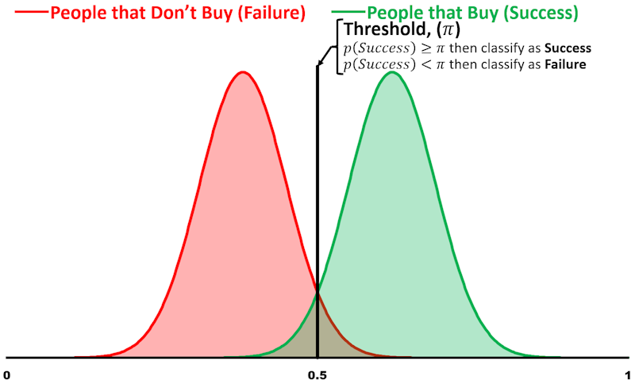
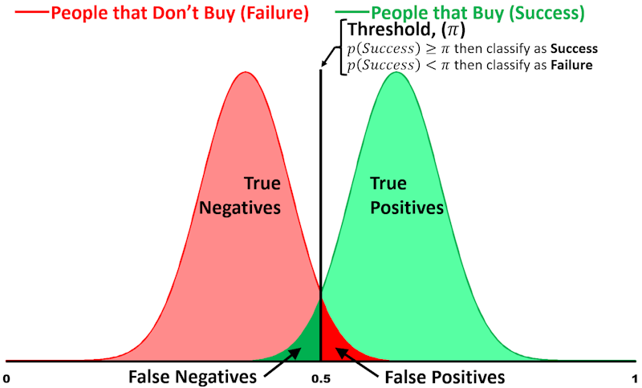


- Ideally, want both to be high, but…
- Overall correctly classified
- Compare with Proportional Chance Criterion (\(PCC\))
- \(PCC\) is the “average” probability of classification based on group sizes
- \(PCC=p^2+(1-p)^2\) where \(p\) is the proportion of sample in the \(\text{SUCCESS}\) group
- Overall correctly classified \(>PCC\) considered good fit when examining holdout data
- Compare with Proportional Chance Criterion (\(PCC\))
3.5.2.3 ROC Curve
- Plot sensitivity by \(1-\) specificity as \(\pi\) goes from \(0\) to \(1\)
- More area under curve means better model
Area under Curve Discrimination AUC = .5 None .5 < AUC < .7 Poor .7 ≤ AUC < .8 Acceptable .8 ≤ AUC < .9 Excellent AUC ≥ .9 Outstanding
Figure 3.6: Sample ROC Curve
Code
spec <- seq(0,1,.001)
sens <- sqrt(1-spec^2)
df <- data.frame(spec,sens)
data.frame(spec,sens) %>%
mutate(sens=ifelse(sens>1,1,sens)) %>%
mutate(sens=ifelse(sens<0,0,sens)) %>%
ggplot(aes(x=spec, y=sens)) +
geom_line(color="darkorange", size=2) +
scale_x_reverse() +
geom_segment(x=-1, y=0, xend=0, yend=1,
color="forestgreen", size=2) +
geom_segment(x=-.495, y=.495, xend=-.375, yend=.375,
arrow=arrow(ends="first")) +
annotate("text", x=.375, y=.35,
label="Chance Model", size=6) +
theme(text=element_text(size=15)) +
labs(x="Specificity", y="Sensitivity")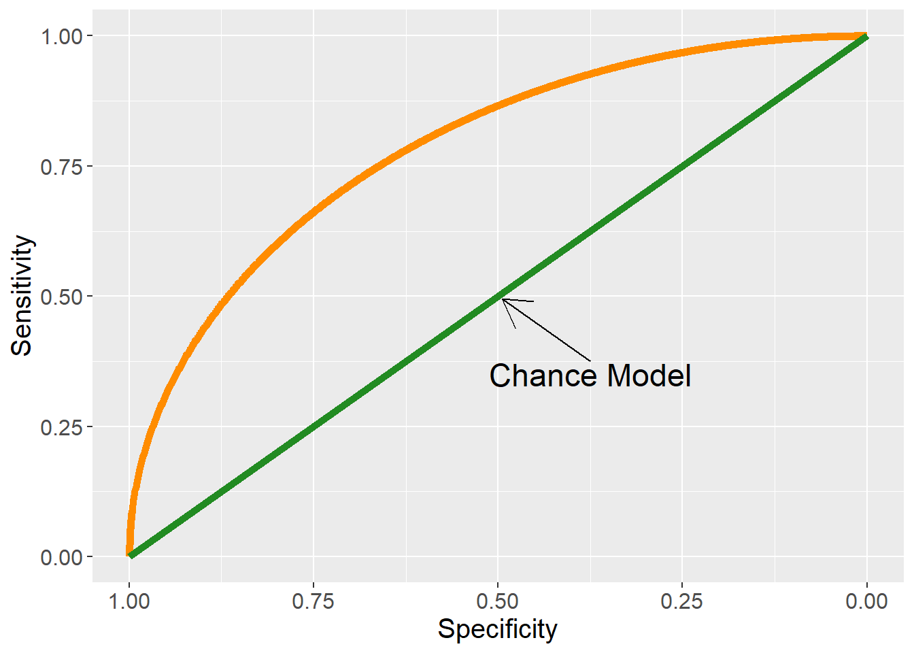
3.5.3 Interpreting Coefficients
- Relationship between DV and each IV
- \(H_0: \beta_k=0\) vs. \(H_a: \beta_k\ne0\)
- Interpret significant relationships
- Interpretation depends on \(OR\) or \(Logit\) estimation
- Direction of relationship:
- \(Logit\) estimation: \(\beta_k>0\) for positive, \(\beta_k<0\) for negative
- \(OR\) estimation: \(\beta_k>1\) for positive, \(\beta_k<1\) for negative
- Magnitude of change:
- \(Logit\) estimation: coefficients are not particularly useful
- \(OR\) estimation:
- Percentage change in odds
- Compare probabilities between groups
- Interaction of continuous IV and dummy IV
- \(Logit=\alpha+\beta_1x_1+\beta_2D+\beta_3(x_1\times D)\)
- When \(D=0\), \(Logit=\alpha+\beta_1x_1\), so:
\(OR(x_1)=e^{\beta_1}\) - When \(D=1\), \(Logit=(\alpha+\beta_2)+(\beta_1+\beta_3)x_1\), so:
\(OR(x_1)=e^{(\beta_1+\beta_3)}\)
3.5.4 Gain and Lift
- Evaluate performance of classification
- Example:
- Suppose \(10\%\) of \(2000\) customers will accept offer
- For \(100\) random customers, expect \(10\) accepted offers
- Model predicts some customers more likely to accept
- Instead of contacting \(100\) random customers…
Contact \(100\) most likely to accept based on model - Continue doing this in groups of \(100\) (or \(200\), etc.)
- Gain and lift provide measures of how much better the model performs vs. no model/random
- Process
- Predict \(p(\text{SUCCESS})\) for each observation and sort descending
- Split into 10 (deciles) or 20 (demi-deciles) ordered groups
- Calculate \(\%\) observations and \(\%\) successes for each group
3.5.4.1 Gain
- Cumulative successes up to that group divided by total successes across all groups
- Plot on \(y\)-axis, with cumulative percent of observations on \(x\)-axis
- Example:
- Supposed out of 2000 customers, 200 (or 10%) will ultimately buy
- If we randomly contact 20% (or 400), how many buyers would be expect?
- 20% of 200 total buyers = 40 buyers
- What if we contact the top 20% most likely to buy?
- Get about 55% of ultimate buyers…
- 55% of 200 total buyers = 110 buyers
- We “gained” 35% or 70 buyers
Figure 3.7: Typical Gain Chart Shape
Code
pcc <- seq(.05,1,.01)
pcp <- .3376*log(pcc)+1.0944
data.frame(pcc,pcp) %>%
mutate(pcp=ifelse(pcp>1,1,pcp)) %>%
ggplot(aes(x=pcc, y=pcp)) +
geom_line(color="midnightblue", size=1) +
scale_x_continuous("Proportion Customers Contacted",
limits=c(.05,1), breaks=seq(.1,1,.1)) +
scale_y_continuous("Proportion Customers Positive",
limits=c(.05,1), breaks=seq(.1,1,.1)) +
geom_segment(x=.05, y=.05, xend=1, yend=1,
color="red", size=1) +
geom_segment(x=.9, y=.775, xend=.9, yend=.895,
arrow=arrow(ends="last")) +
annotate("text", x=.9, y=.765,
label="Baseline Model", size=5) +
theme(text=element_text(size=15)) +
geom_segment(x=.2, y=0, xend=.2, yend=.55105376,
linetype=2, color="darkorange", size=.75) +
geom_segment(x=0, y=.2, xend=.2, yend=.2,
linetype=2, color="darkorange", size=.75) +
geom_segment(x=0, y=.55105376, xend=.2, yend=.55105376,
linetype=2, color="darkorange", size=.75)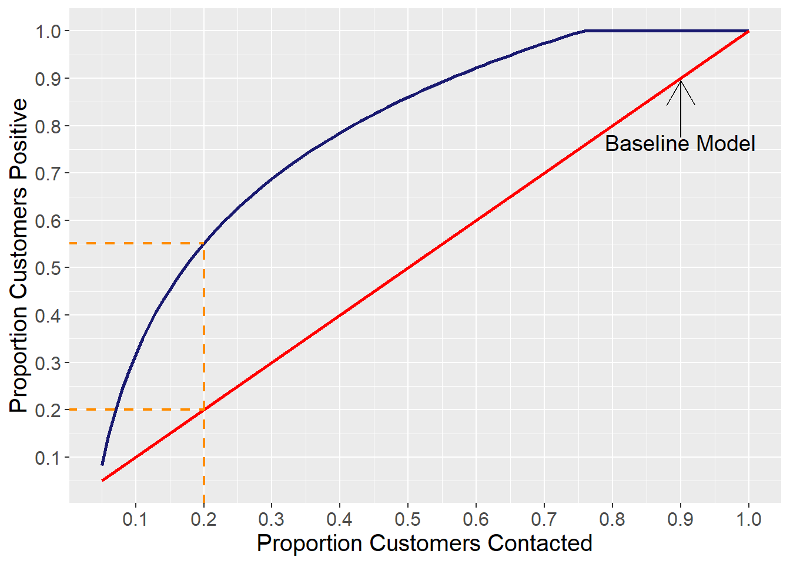
3.5.4.2 Lift
- Ratio of cumulative success up to that group divided by expected success from no model
- Plot on \(y\)-axis, with cumulative percent of observations on \(x\)-axis
Figure 3.8: Typical Lift Chart Shape
Code
lift <- 2.7863*pcc^3-4.5901*pcc^2+.2319*pcc+2.5673
data.frame(pcc,lift) %>%
mutate(lift=ifelse(lift<1,1,lift)) %>%
ggplot(aes(x=pcc, y=lift)) +
geom_line(color="midnightblue", size=1) +
scale_x_continuous("Proportion Customers Contacted",
limits=c(.05,1), breaks=seq(.1,1,.1)) +
scale_y_continuous("Lift",
limits=c(1,2.6), breaks=seq(1,2.5,.25)) +
geom_segment(x=.05, y=1, xend=1, yend=1, color="red", size=1) +
geom_segment(x=.5, y=1, xend=.5, yend=1.25,
arrow=arrow(ends="first")) +
annotate("text", x=.5, y=1.3, label="Baseline Model", size=5) +
theme(text=element_text(size=15)) +
geom_segment(x=.2, y=1, xend=.2, yend=2.452366,
linetype=2, color="darkorange", size=.75) +
geom_segment(x=0, y=2.452366, xend=.2, yend=2.452366,
linetype=2, color="darkorange", size=.75)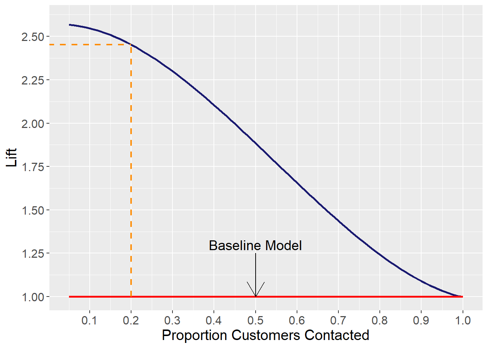
3.5.5 Sensitivity/Specificity Plots
- Sensitivity, Specificity, and Accuracy depend on the cutoff value for predicting SUCCESS/ FAILURE
- While 0.5 is the most common threshold, it might not be the best threshold for prediction
- Looking for:
- High accuracy
- Relative balance between specificity and sensitivity
- Sensitivity/Specificity Plots can show the analyst how each changes with different cutoff values
Figure 3.9: Sample Sensitivity/Specificity Plot
Code
pcc <- seq(0,1,.01)
sens <- 1.0189-.01678*pcc-.8349*pcc^2
spec <- 1.9211*pcc-.8349*pcc^2-.0778
acc <- .45+1.6*pcc-1.6*pcc^2
data.frame(pcc, sens, spec, acc) %>%
mutate(sens=ifelse(sens>1,1,sens)) %>%
mutate(spec=ifelse(spec<0,0,spec)) %>%
mutate(spec=ifelse(spec>1,1,spec)) %>%
ggplot(aes(x=pcc)) +
geom_line(aes(y=acc), color="red4", size=1.2) +
geom_line(aes(y=sens), color="forestgreen", size=.7) +
geom_line(aes(y=spec), color="blue", size=.7) +
geom_point(aes(y=sens), color="forestgreen") +
geom_point(aes(y=spec), color="blue") +
scale_x_continuous("Cutoff Value", breaks=seq(0,1,.1)) +
scale_y_continuous("Measure Value", breaks=seq(0,1,.1)) +
geom_segment(x=.3, y=.423, xend=.4, yend=.3, arrow=arrow(ends="first")) +
annotate("text", x=.4, y=.28, label="Specificity", size=5) +
geom_segment(x=.85, y=0.401, xend=.75, yend=.3, arrow=arrow(ends="first"))+
annotate("text", x=.75, y=.28, label="Sensitivity", size=5) +
geom_segment(x=.2, y=.706, xend=.1, yend=.82, arrow=arrow(ends="first"))+
annotate("text", x=.1, y=.85, label="Accuracy", size=5) +
theme(text=element_text(size=15))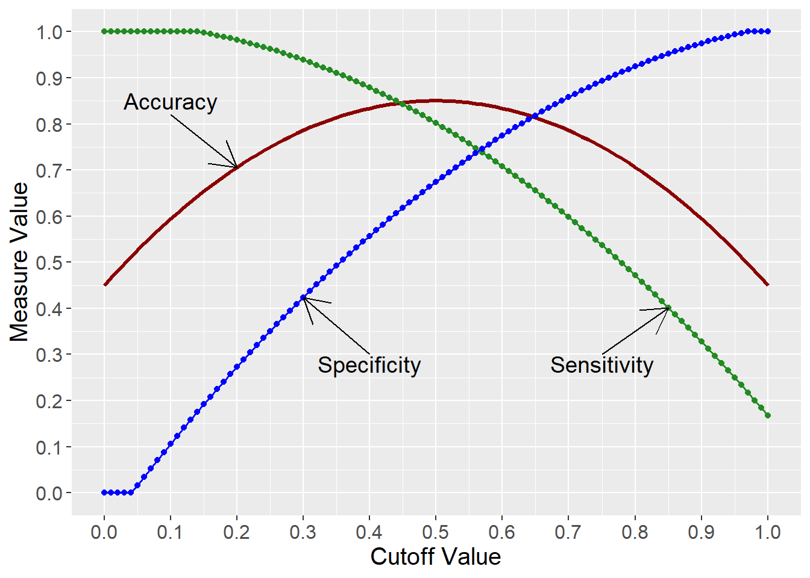
3.6 Logistic Regression Example
3.6.1 Overview
- Purchase data for direct marketing campaign
- 400 observations of individual responses
- DV: Purchase made, \(buy\) (factor: Yes, No)
- IVs:
- Age, \(age\)
- Estimated Salary ($000s), \(salary\)
- Gender, \(gender\) (factor: Male, Female)
- Predict likelihood of purchase
- Split sample into Training and Holdout
3.6.2 Estimation Results
- Logit formulation results
Table 3.2: Logistic Regression Results (Logit Formulation)
Code
| χ²(3) | 182.2574 |
| p | 0.0000 |
| Pseudo-R² (Cragg-Uhler) | 0.6231 |
| Pseudo-R² (McFadden) | 0.4638 |
| AIC | 218.6842 |
| BIC | 233.5126 |
| Est. | S.E. | z val. | p | |
|---|---|---|---|---|
| (Intercept) | -13.1661 | 1.6217 | -8.1187 | 0.0000 |
| age | 0.2502 | 0.0321 | 7.7961 | 0.0000 |
| salary | 0.0406 | 0.0067 | 6.0265 | 0.0000 |
| genderFemale | -0.4069 | 0.3498 | -1.1631 | 0.2448 |
| Standard errors: MLE |
- Odds Ratio Coefficients
Table 3.3: Logistic Regression Odds Ratio Coefficients
| exp(Est.) | 2.5% | 97.5% | z val. | p | |
|---|---|---|---|---|---|
| (Intercept) | 0.0000 | 0.0000 | 0.0000 | -8.1187 | 0.0000 |
| age | 1.2843 | 1.2060 | 1.3677 | 7.7961 | 0.0000 |
| salary | 1.0415 | 1.0278 | 1.0553 | 6.0265 | 0.0000 |
| genderFemale | 0.6657 | 0.3354 | 1.3215 | -1.1631 | 0.2448 |
| Standard errors: MLE |
3.6.3 Overall Model Fit
- Based on the likelihood ratio \(\chi^2\) test with a \(p\text{-value}<.0001\), the overall model is significant (see Table 3.2)
- McFadden’s Pseudo-\(R^2\) of \(.464\) means that the model explains about \(46\%\) of the variation between buyers/non-buyers (see Table 3.2)
- Classification Matrix for the Training Sample shows:
- High sensitivity (\(72.2\%\))
- High specificity (\(91.2\%\))
- High precision (\(82.1\%\))
- Correctly classified (\(84.4\%\)) > PCC (\(54.0\%\))
Table 3.4: Classification Matrix for Training Sample
Code
# NOTE: Saving as result for formatting of online lecture notes
cmout <- classify_logistic(MOD=model, # Object with model results
DATA=train, # Model data frame
POSITIVE="Yes", # Factor level for "True"
DATA2=test, # Test/holdout data frame
LABEL1="Training Data",
LABEL2="Test Data",
ft=TRUE)
cmout$sample1$tableClassification Matrix - Training Data (Cutoff = 0.50) | |||
|---|---|---|---|
Accuracy = 0.844 | |||
PCC = 0.540 | |||
Reference | |||
Predicted | No | Yes | Total |
No | 176 | 30 | 206 |
Yes | 17 | 78 | 95 |
Total | 193 | 108 | 301 |
Selected Statistics (Positive Class): | |||
Sensitivity | 0.722 | ||
Specificity | 0.912 | ||
Precision | 0.821 | ||
- Classification Matrix for the Test/Holdout Sample shows:
- High sensitivity (\(77.1\%\))
- High specificity (\(90.6\%\))
- High precision (\(81.8\%\))
- Correctly classified (\(85.9\%\)) > PCC (\(54.3\%\))
Table 3.5: Classification Matrix for Test Sample
Classification Matrix - Test Data (Cutoff = 0.50) | |||
|---|---|---|---|
Accuracy = 0.859 | |||
PCC = 0.543 | |||
Reference | |||
Predicted | No | Yes | Total |
No | 58 | 8 | 66 |
Yes | 6 | 27 | 33 |
Total | 64 | 35 | 99 |
Selected Statistics (Positive Class): | |||
Sensitivity | 0.771 | ||
Specificity | 0.906 | ||
Precision | 0.818 | ||
- ROC Curve for Training Sample
- Area \(>.90\) suggests an outstanding model fit
Figure 3.10: ROC Curve for Training Sample
Code
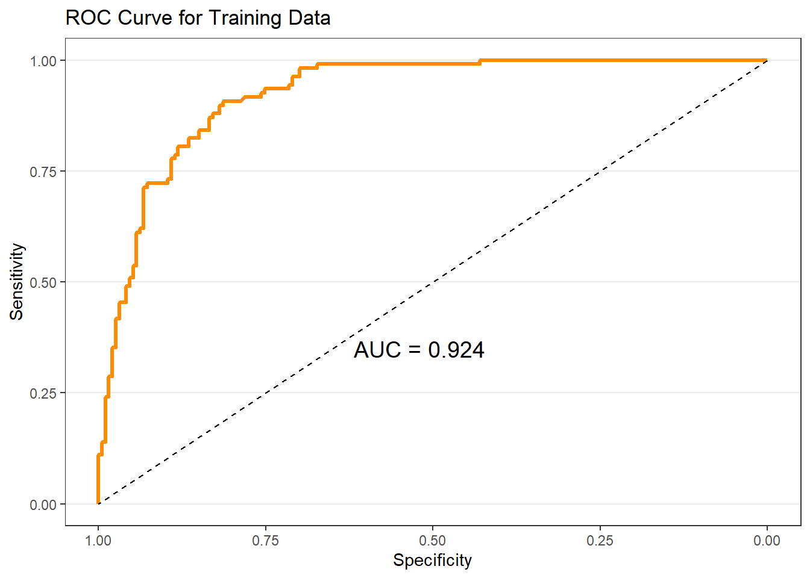
- ROC Curve for Holdout Sample
- Area \(>.90\) suggests an outstanding model fit
Figure 3.11: ROC Curve for Test Sample
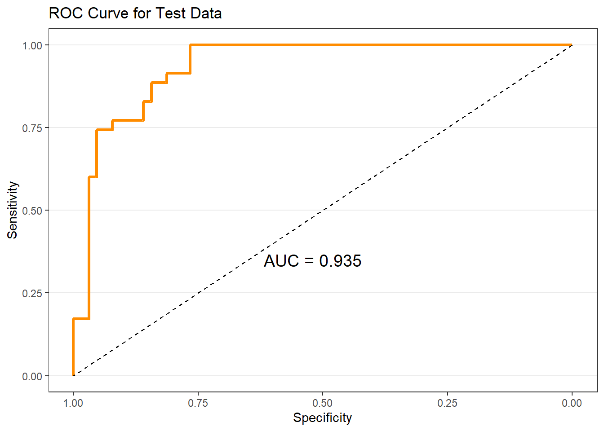
3.6.4 Interpreting Coefficients
- Refer back to Table 3.3
- \(age\) is positive (\(OR>1\)) and significant (\(p<.001\))
- \(1\) year increase in \(age\) increases odds of buying by a factor of \(1.28\) (or odds of buying increase by \(25\%\))
- \(salary\) is positive (\(OR>1\)) and significant (\(p<.001\))
- \(\$1000\) increase in \(salary\) increases odds of buying by a factor of \(1.04\) (or odds of buying increase by \(4\%\))
- \(gender\) is negative (\(OR<1\)), but not significant (\(p=.245\))
- Had it been significant… Being female decreases odds of buying by a factor of \(.67\) (or odds of buying decrease by \(33\%\))
- Can visually examine how \(\Pr(buy)\) changes with IVs
Figure 3.12: Margin Plot for Age, Salary, and Gender
Code
# Use 'easy_mp' and save plots as objects
p1 <- easy_mp(model, focal="age")$plot +
labs(y="Pr(Buy)", x="Age") + ylim(0,1)
p2 <- easy_mp(model, focal="salary")$plot +
labs(y="Pr(Buy)", x="Salary") + ylim(0,1)
p3 <- easy_mp(model, focal="gender")$plot +
labs(y="Pr(Buy)", x="Gender") + ylim(0,1)
# Arrange three plots in a grid using package 'cowplot'
plot_grid(p1,p2,p3, nrow=2)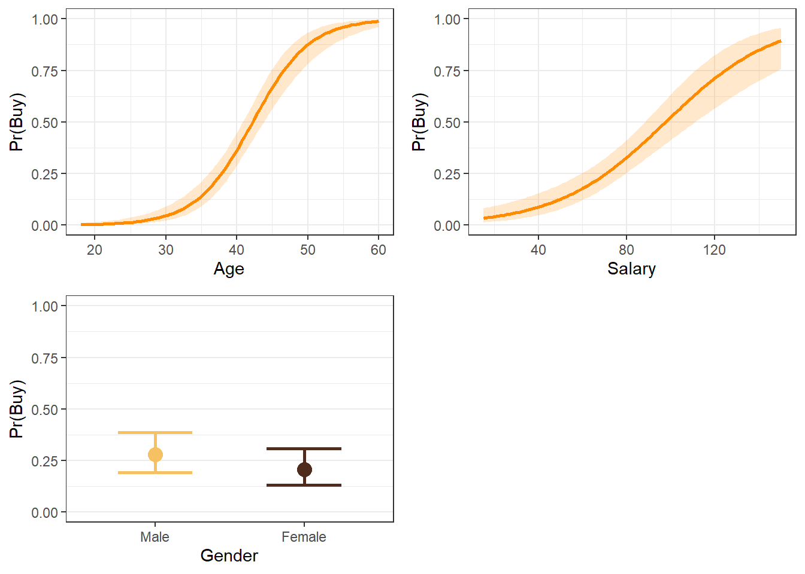
3.6.5 Gain
- Can examine gain for both the training and holdout samples…
- But using holdout is more informative
- Contacting the top \(25\%\) of predicted buyers yields nearly \(60\%\) of actual buyers
Figure 3.13: Gain Chart for Training and Test/Holdout Samples
Code
# Use `gainlift_logistic` and save results to oject
glresults <- gainlift_logistic(model, train, test, "Yes")
# Request gain plot
glresults$gainplot +
# Code below for presentation purposes only (NOT USUALLY NECESSARY)
annotate("segment", x=0.25, y=0, xend=0.25, yend=0.6,
linetype=2, linewidth = 1, color="orange") +
annotate("segment", x=0.05, y=0.6, xend=0.25, yend=0.6,
linetype=2, linewidth = 1, color="orange") +
annotate("segment", x=0.5, y=0, xend=0.5, yend=0.971,
linetype=2, linewidth = 1, color="brown") +
annotate("segment", x=0.05, y=0.974, xend=0.5, yend=0.971,
linetype=2, linewidth = 1, color="brown")
3.6.6 Lift
- Can examine gain for both the training and holdout samples…
- But using holdout is more informative
- Contacting the top \(25\%\) of predicted buyers provides lift of nearly 2.5
Figure 3.14: Lift Chart for Training and Test/Holdout Samples
Code
# Request lift plot
glresults$liftplot +
# Code below for presentation purposes only (NOT USUALLY NECESSARY)
annotate("segment", x=0.25, y=1, xend=0.25, yend=2.48,
linetype=2, linewidth = 1, color="orange") +
annotate("segment", x=0.05, y=2.48, xend=0.25, yend=2.48,
linetype=2, linewidth = 1, color="orange") +
annotate("segment", x=0.5, y=1, xend=0.5, yend=1.96,
linetype=2, linewidth = 1, color="brown") +
annotate("segment", x=0.05, y=1.96, xend=0.5, yend=1.96,
linetype=2, linewidth = 1, color="brown")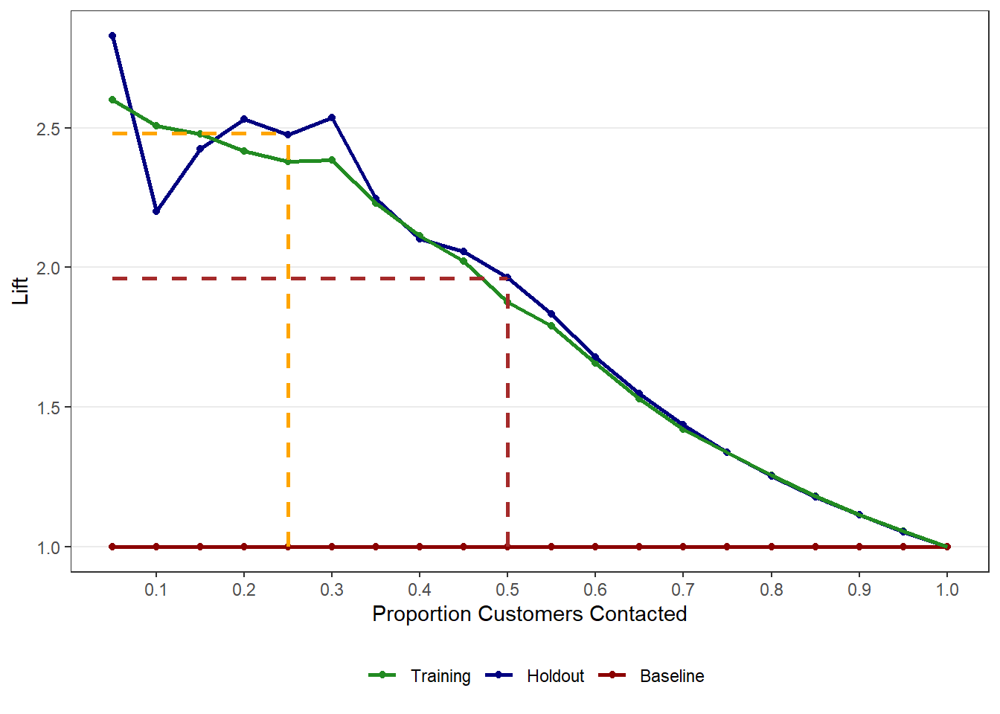
3.6.7 Sensitivity/Specificity Plots
- Examine to see if different thresholds are warranted
- Looking at the plots for both the training sample (see Figure 3.15) and the test/holdout sample (see Figure 3.16), it might be worthwhile to try a cutoff threshold between 0.35 and 0.40
- Doing so will balance specificity and sensitivity without hurting accuracy
- Looking at the plots for both the training sample (see Figure 3.15) and the test/holdout sample (see Figure 3.16), it might be worthwhile to try a cutoff threshold between 0.35 and 0.40
Figure 3.15: Sensitivity/Specificity Plot for Training Sample
Code

Figure 3.16: Sensitivity/Specificity Plot for Test/Holdout Sample
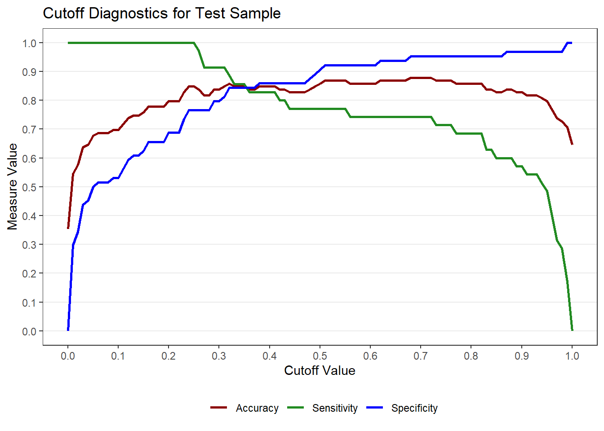
3.7 Suggested Readings
- R for Marketing Research and Analytics. 2nd Edition (2019). Chapman, Chris; McDonnel Feit, Elea
- BGSU Library Link:
https://librarysearch.bgsu.edu/permalink/01OHIOLINK_BGSU/i5ro6c/alma9926179903408506 - Chapter 9.2: Linear Models for Binary Outcomes: Logistic Regression
- BGSU Library Link:
- OpenIntro Statistics. 4th Edition (2019). Diez, David; Cetinkaya-Rundel, Mine; Barr, Christopher D.
- Available at OpenIntro.org:
https://www.openintro.org/book/os/ - Chapter 9: Multiple and logistic regression
- Available at OpenIntro.org:
- Multivariate Data Analysis. Hair, Joseph F.; Black, William C.; Babin, Barry J.; Anderson, Rolph E.
- 7th Edition: Search for “multivariate data analysis 7th edition hair” Chapter 6: Logistic Regression with a Binary Dependent Variable
- 5th Edition: Course reserves
- Chapter 5: Multiple Discriminant Analysis and Logistic Regression (pp. 276-281; 314-321)